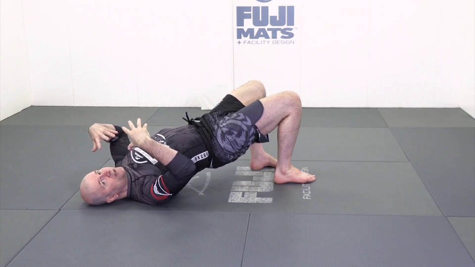
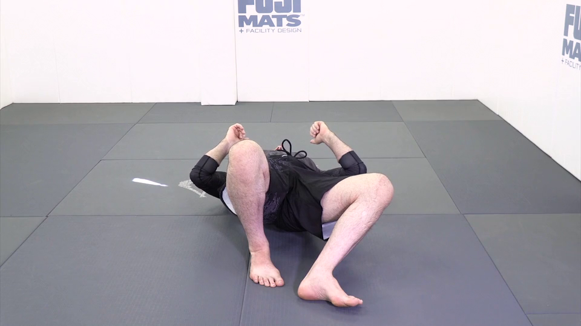
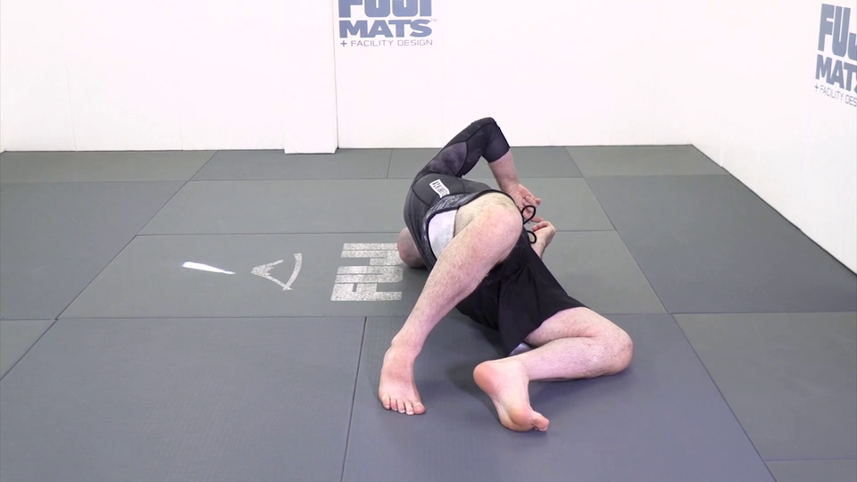
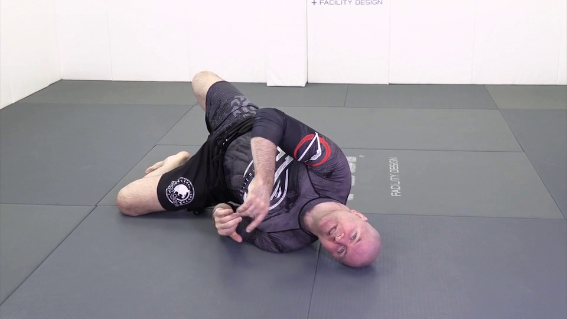

Джон Данахер. Соло-дриллы
Содержание
1. База
1.1 Мост
Таз не совсем вверх - мы хотим сместить противника вбок, а не просто поднять высоко вверх

Колено в пол, пальцы ноги должны иметь возможность оттолкнуться от пола

Нас не должно сложить!

Голова - смотрим в ту сторону, в которую делаем мост

Не заваливаемся

Полный вариант правильный